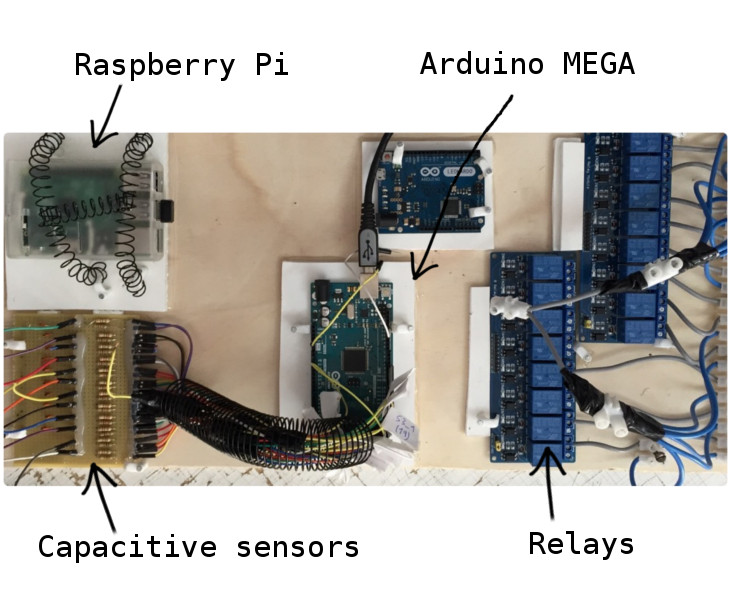

This project is very exciting and fun. As a good Arduino and Raspberry Pi maker I am always willing and comfortable working with the hardware at the same time as with the software and this project is very interesting from this point of view.
It is basically a custom developed advertising stand for an important customer for a local fair. The original idea was developed by a very creative graphic designer and he delegated to me the technical aspects of the development.
The goal was to develop a very tall advertising stand that was seen from throughout the fair and invite people to interact with it to get more information. The proposed design was a tree where its leafs were illuminated boxes with brands, a television screen in the trunk of the tree that showed more information and some touch panels with the brands around the trunk.
Concept
The design as you can see is very well detailed and in my opinion correct. Technically it is very feasible to implement and it is possible easily observe the different elements that will compound the tree.
The specifications are as follows:
- The display should invite you to touch the panels in the standby mode.
- When someone touches a button, it must turn on the associated leaf-box and play the informative video on the screen. It must also turn off the last illuminated leaf-box if there is one.
- There must be a safety margin between valid interactions in order to avoid changing videos repeatedly in short intervals.
- When the informational video is finished, the leaf-box must be turned off and the screen must again invite to touch the panels.
- It must have an automatic mode, so if it is a long time without interactions it will start to illuminate the leaf-boxes and play informative videos automatically.
- The material used must fit the budget of the project since the tree is one more element of the stand and should not spend all the resources.
- The main components and boards must be redundant.
After analyzing it from a technical point of view, we came to the conclusion that the project will consist of:
- A custom made wooden structure with boxes with the brands. This point did not come within my tasks and therefore I will skip it here.
- Several relays connected on one side to the bulbs (which will be quite powerful) and an AC power supply, and on the other side to an Arduino board that will be the controller of the relay.
- Several touch panels connected to an Arduino board that will monitor the input.
- A large full HD television screen connected by HDMI to a Raspberry Pi board that will play the videos.
Implementation
The Arduino board chosen as the controller was the MEGA version because we needed the maximum number of possible digital inputs and outputs (this board has 54) since at first it was not known the exact number of products that customer wanted to advertise and the difference of price is not important.
I also had other Arduinos in my workshop with which I could do experiments and try things (in the images you can see an Arduino Leonardo that was very interesting because this model can simulate an USB keyboard).
The chosen Raspberry Pi model was the Model B. This choice was simply because we had several in the workshop and was quite enough for the project.
The resulting board is of small size and can be concealed in the 'roots' of the tree.
 Board with chosen componentsTouch panels
To make interactive touch panels we rely on the typical capacitive sensors that are very well documented and are very easy to do. Basically it consists of a few resistors, capacitors, conductive material and some tin.

I recommend reading the official Arduino website about it to understand how it works and how to use it in any project.
There is an Arduino software library to use that deal with all the underlying complexity so from the software point of view it was also a good choice. For example, to define a sensor using this library and read its input only the following code is needed:
CapacitiveSensor sensor = CapacitiveSensor(14,15);
long total = sensor.capacitiveSensor(30);
if (total > SENSOR_THRESHOLD)
{
// do something
}
Relay and light bulbs
To control the high voltage circuit with the Arduino board and thus turn on the bulbs was used two eight channel DC 5V relay module. These relays are very easy to use, economical and reliable.
From the software point of view it is only necessary to set LOW/HIGH a digital output pin of the Arduino board. For example:
digitalWrite(outputs[selectedBrand], HIGH);
Communication between Arduino and Raspberry Pi
Communication is done via the USB connection. When Arduino turn on a leaf-box, it must send an order to the serial port. Raspberry Pi must be listening and reading this port in an infinite loop to process all the video playback orders that it receives.
For example, to send the order to play video number one, the following code must be executed in Arduino:
Serial.begin(9600);
Serial.print("SELECT_1\n");
And the following in Raspberry Pi:
ser = serial.Serial(usbPath, 9600)
selection = ser.readline()
if "SELECT_1" in selection:
// do something
TV screen with informative videos
The Raspberry Pi program that plays the videos and reads the orders that come from Arduino is written in Python. I have based on the player pyomxplayer that it is based on omxplayer (pyomxplayer is a Python wrapper).
I just had to extend it, removing a lot of functionality that I did not need (like the playback control interface) and adding the desired behavior by default (full screen, looping of the standby video, etc). In the main thread it listens the serial port to receive the orders of Arduino and executes them. For example, to play the informative video number one would invoke the following method:
def select_1(self):
if self.selected == 1:
return;
self.stop_omx()
self.selected = 1
self.selectedTime = self.current_millis_time()
self.start_omx('/home/pi/Desktop/VIDEOS/VIDEO_1.mp4')
self.schedStandby(40)
Conclusion
The result of this project was successful. Both the customer and my intermediate friends were happy. I personally was happy to participate in it.
Jobs involving software and hardware are very entertaining challenges to perform. I am delighted to work with Arduino and Raspberry Pi boards and I will do it again as soon as I have a chance.